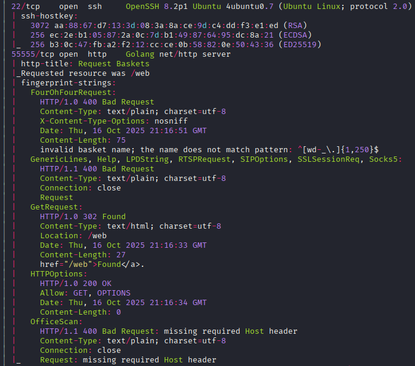
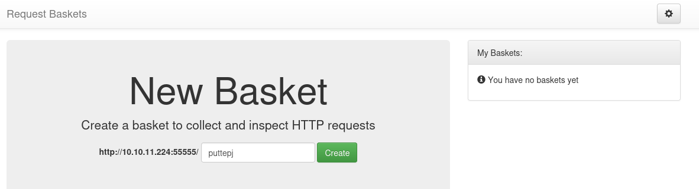
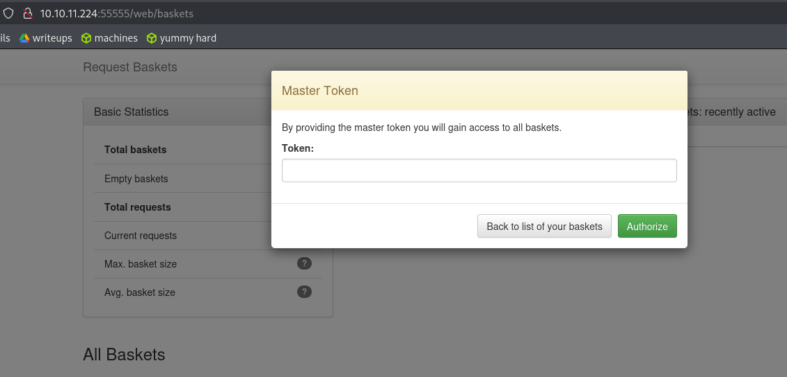
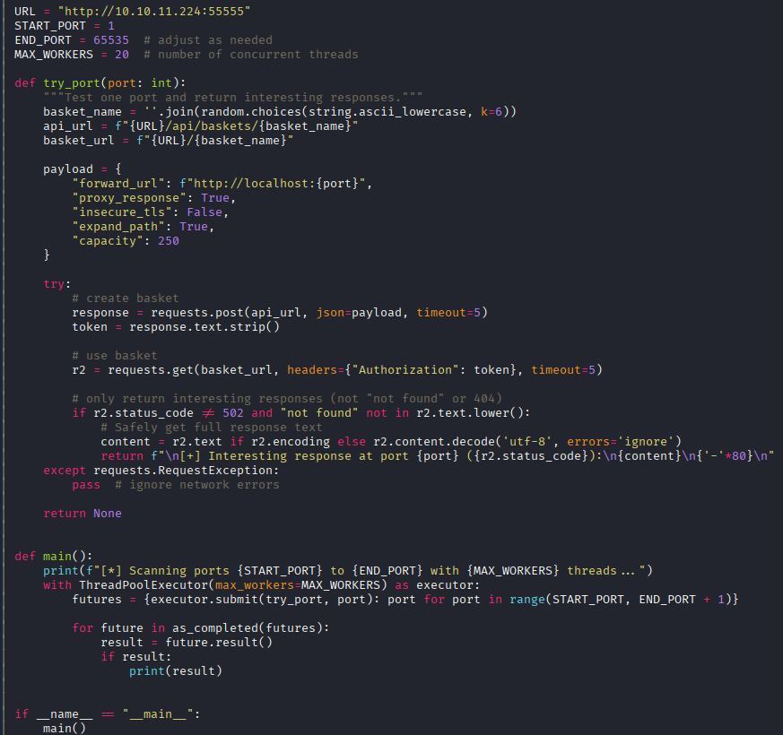

Exploitation Summary
Exploitation process: The target machine was running request-baskets version 1.2.1 on port 55555, which is vulnerable to CVE-2023-27163, a Server-Side Request Forgery (SSRF) vulnerability. By exploiting this SSRF flaw, I was able to access internal services not directly accessible from the internet, specifically discovering a Maltrail instance running locally on port 80.
Using the SSRF vulnerability to proxy requests through request-baskets, I identified that Maltrail version 0.53 was running internally. This version contains an unauthenticated command injection vulnerability in the login functionality. By chaining the SSRF with the Maltrail RCE exploit, I obtained a reverse shell as the puma user.
Privilege escalation was achieved by exploiting a sudo misconfiguration that allowed the puma user to execute systemctl status trail.service without a password. Since systemctl uses less as its pager, I was able to spawn a root shell by executing commands directly from the less interface, gaining full root access to the system.
Technologies/Exploits: request-baskets SSRF (CVE-2023-27163), Maltrail v0.53 unauthenticated command injection RCE, systemctl/less privilege escalation via sudo misconfiguration.
Initial Reconnaissance
Starting with a port scan to identify open services on the target machine:

The scan reveals SSH running on port 22 and an interesting service on port 55555. Port 80 appears to be filtered, meaning it's likely accessible only from localhost. The service on port 55555 is the primary entry point for initial investigation.
Web Enumeration - request-baskets Service
Navigating to port 55555, I find a request-baskets application:

This is a simple web interface that allows creating "baskets" to collect and inspect HTTP requests. Clicking on the settings icon reveals more configuration options:

The interface allows creating baskets with custom names. When creating a basket, I observe that the application makes a POST request to /api/baskets/{basket_name}. This API structure suggests there might be additional endpoints worth exploring.
API Discovery
Performing directory fuzzing on the /api path, I discover an interesting endpoint:
http://10.10.11.224:55555/api/version
Accessing this endpoint returns a JSON response containing valuable information, including a link to the project's GitHub repository: https://github.com/darklynx/request-baskets
Vulnerability Research - CVE-2023-27163
Investigating the GitHub repository's issues, I discover a critical vulnerability: Issue #91 which describes CVE-2023-27163, a Server-Side Request Forgery (SSRF) vulnerability.
According to the vulnerability description:
"Contains a Server-Side Request Forgery (SSRF) via the component /api/baskets/{name}. This vulnerability allows attackers to access network resources and sensitive information via a crafted API request."
The issue references a proof-of-concept exploit available at: https://github.com/entr0pie/CVE-2023-27163
Understanding the SSRF Vulnerability
The SSRF vulnerability allows me to configure a basket to forward requests to internal network resources. This means I can use request-baskets as a proxy to access services that are only accessible from localhost or the internal network, effectively bypassing network restrictions.
Internal Port Scanning via SSRF
To identify internal services, I create a Python script to automate the process of scanning internal ports through the SSRF vulnerability:

This script systematically creates baskets configured to forward requests to different localhost ports, then checks which ones respond successfully. Running the script reveals that ports 80 and 8338 are open internally and appear to be running the same service.
Discovering Maltrail
Using the SSRF to access the internal service on port 80, I discover it's running Maltrail, a malicious traffic detection system. The project is available at: https://github.com/stamparm/maltrail
Examining the page footer reveals the specific version:
Powered by Maltrail (v0.53)
This version information is crucial for identifying applicable exploits.
Initial Access - Maltrail RCE Exploitation
Researching vulnerabilities for Maltrail v0.53, I find an unauthenticated remote code execution vulnerability. A working exploit is available at: https://github.com/spookier/Maltrail-v0.53-Exploit
Understanding the Maltrail Vulnerability
The exploit leverages a command injection vulnerability in Maltrail's login functionality. The application fails to properly sanitize user input in the username parameter, allowing an attacker to inject arbitrary OS commands that get executed on the server.
The attack chain works as follows:
- Use the SSRF vulnerability in request-baskets to create a proxy to the internal Maltrail service
- Send a crafted login request through the SSRF proxy containing a command injection payload
- The injected command executes on the target, establishing a reverse shell connection
Executing the Exploit
First, I set up a netcat listener to catch the reverse shell:
sudo nc -lvnp 443
Then I execute the Maltrail exploit, pointing it at my SSRF proxy endpoint that forwards to the internal Maltrail service. The exploit successfully triggers the command injection, and I receive a reverse shell connection as the puma user.
With shell access, I can now retrieve the user flag from the puma user's home directory.
Credential Discovery
While exploring the system as puma, I examine Maltrail's configuration files and discover credentials in the users configuration:
USERS
admin:9ab3cd9d67bf49d01f6a2e33d0bd9bc804ddbe6ce1ff5d219c42624851db5dbc:0: # changeme!
# local:9ab3cd9d67bf49d01f6a2e33d0bd9bc804ddbe6ce1ff5d219c42624851db5dbc:1000:192.168.0.0/16 # changeme!
The comment suggests the default password is changeme!. I attempt to log into the Maltrail web interface with credentials admin:changeme!, which works, but the authenticated interface doesn't reveal any immediately useful functionality for further exploitation.
Privilege Escalation - systemctl Sudo Misconfiguration
Checking for sudo privileges available to the puma user:
sudo -l
The output reveals a significant misconfiguration:
User puma may run the following commands on sau:
(ALL : ALL) NOPASSWD: /usr/bin/systemctl status trail.service
The puma user can execute systemctl status trail.service with sudo privileges without requiring a password. This appears to be a limited command, but systemctl has a known privilege escalation vector.
Understanding the systemctl Privilege Escalation
According to GTFOBins, when systemctl displays long output, it uses a pager (typically less) to display the content. The less pager allows executing shell commands directly from its interface by typing ! followed by a command.
Since the systemctl status command runs with sudo privileges, the pager also runs with elevated privileges, meaning any commands executed from within less will also run as root.
Executing the Privilege Escalation
I execute the permitted sudo command:
sudo /usr/bin/systemctl status trail.service
This opens the service status in the less pager. From within less, I type:
!sh
This spawns a shell with root privileges. Verifying the escalation:
whoami
The command confirms:
root
With root access established, I can retrieve the root flag from /root/root.txt, successfully completing the machine.
Resumen de Explotación
Resumen del proceso: La máquina objetivo ejecutaba request-baskets versión 1.2.1 en el puerto 55555, vulnerable a CVE-2023-27163, una vulnerabilidad de Server-Side Request Forgery (SSRF). Explotando este fallo de SSRF, pude acceder a servicios internos no accesibles directamente desde Internet, descubriendo específicamente una instancia de Maltrail ejecutándose localmente en el puerto 80.
Utilizando la vulnerabilidad SSRF para hacer proxy de peticiones a través de request-baskets, identifiqué que Maltrail versión 0.53 se estaba ejecutando internamente. Esta versión contiene una vulnerabilidad de inyección de comandos no autenticada en la funcionalidad de login. Encadenando el SSRF con el exploit RCE de Maltrail, obtuve una reverse shell como usuario puma.
La escalada de privilegios se consiguió explotando una mala configuración de sudo que permitía al usuario puma ejecutar systemctl status trail.service sin contraseña. Como systemctl utiliza less como pager, pude lanzar una shell como root ejecutando comandos directamente desde la interfaz de less, obteniendo acceso root completo al sistema.
Tecnologías/Exploits: request-baskets SSRF (CVE-2023-27163), Maltrail v0.53 RCE mediante inyección de comandos no autenticada, escalada de privilegios con systemctl/less mediante mala configuración de sudo.
Reconocimiento Inicial
Comienzo con un escaneo de puertos para identificar servicios abiertos en la máquina objetivo:
El escaneo revela SSH ejecutándose en el puerto 22 y un servicio interesante en el puerto 55555. El puerto 80 aparece como filtrado, lo que significa que probablemente solo es accesible desde localhost. El servicio en el puerto 55555 es el punto de entrada principal para la investigación inicial.
Enumeración Web - Servicio request-baskets
Navegando al puerto 55555, encuentro una aplicación request-baskets:
Esta es una interfaz web simple que permite crear "baskets" para recopilar e inspeccionar peticiones HTTP. Haciendo clic en el icono de configuración se revelan más opciones:
La interfaz permite crear baskets con nombres personalizados. Al crear un basket, observo que la aplicación hace una petición POST a /api/baskets/{nombre_basket}. Esta estructura de API sugiere que podría haber endpoints adicionales que vale la pena explorar.
Descubrimiento de API
Realizando fuzzing de directorios en la ruta /api, descubro un endpoint interesante:
http://10.10.11.224:55555/api/version
Accediendo a este endpoint devuelve una respuesta JSON conteniendo información valiosa, incluyendo un enlace al repositorio GitHub del proyecto: https://github.com/darklynx/request-baskets
Investigación de Vulnerabilidades - CVE-2023-27163
Investigando las issues del repositorio de GitHub, descubro una vulnerabilidad crítica: Issue #91 que describe CVE-2023-27163, una vulnerabilidad de Server-Side Request Forgery (SSRF).
Según la descripción de la vulnerabilidad:
"Contiene un Server-Side Request Forgery (SSRF) a través del componente /api/baskets/{name}. Esta vulnerabilidad permite a los atacantes acceder a recursos de red e información sensible mediante una petición API manipulada."
La issue referencia una prueba de concepto del exploit disponible en: https://github.com/entr0pie/CVE-2023-27163
Entendiendo la Vulnerabilidad SSRF
La vulnerabilidad SSRF me permite configurar un basket para reenviar peticiones a recursos de la red interna. Esto significa que puedo usar request-baskets como proxy para acceder a servicios que solo son accesibles desde localhost o la red interna, evitando efectivamente restricciones de red.
Escaneo de Puertos Internos mediante SSRF
Para identificar servicios internos, creo un script de Python para automatizar el proceso de escaneo de puertos internos a través de la vulnerabilidad SSRF:
Este script crea sistemáticamente baskets configurados para reenviar peticiones a diferentes puertos de localhost, y luego comprueba cuáles responden exitosamente. Ejecutando el script revela que los puertos 80 y 8338 están abiertos internamente y parecen estar ejecutando el mismo servicio.
Descubriendo Maltrail
Usando el SSRF para acceder al servicio interno en el puerto 80, descubro que está ejecutando Maltrail, un sistema de detección de tráfico malicioso. El proyecto está disponible en: https://github.com/stamparm/maltrail
Examinando el pie de página se revela la versión específica:
Powered by Maltrail (v0.53)
Esta información de versión es crucial para identificar exploits aplicables.
Acceso Inicial - Explotación RCE de Maltrail
Investigando vulnerabilidades para Maltrail v0.53, encuentro una vulnerabilidad de ejecución remota de código no autenticada. Un exploit funcional está disponible en: https://github.com/spookier/Maltrail-v0.53-Exploit
Entendiendo la Vulnerabilidad de Maltrail
El exploit aprovecha una vulnerabilidad de inyección de comandos en la funcionalidad de login de Maltrail. La aplicación no sanitiza correctamente la entrada del usuario en el parámetro de nombre de usuario, permitiendo a un atacante inyectar comandos arbitrarios del sistema operativo que se ejecutan en el servidor.
La cadena de ataque funciona de la siguiente manera:
- Usar la vulnerabilidad SSRF en request-baskets para crear un proxy al servicio Maltrail interno
- Enviar una petición de login manipulada a través del proxy SSRF conteniendo un payload de inyección de comandos
- El comando inyectado se ejecuta en el objetivo, estableciendo una conexión de reverse shell
Ejecutando el Exploit
Primero, configuro un listener de netcat para capturar la reverse shell:
sudo nc -lvnp 443
Luego ejecuto el exploit de Maltrail, apuntándolo a mi endpoint de proxy SSRF que reenvía al servicio Maltrail interno. El exploit desencadena exitosamente la inyección de comandos, y recibo una conexión de reverse shell como usuario puma.
Con acceso shell, ahora puedo recuperar la flag de usuario del directorio home del usuario puma.
Descubrimiento de Credenciales
Mientras exploro el sistema como puma, examino los archivos de configuración de Maltrail y descubro credenciales en la configuración de usuarios:
USERS
admin:9ab3cd9d67bf49d01f6a2e33d0bd9bc804ddbe6ce1ff5d219c42624851db5dbc:0: # changeme!
# local:9ab3cd9d67bf49d01f6a2e33d0bd9bc804ddbe6ce1ff5d219c42624851db5dbc:1000:192.168.0.0/16 # changeme!
El comentario sugiere que la contraseña por defecto es changeme!. Intento iniciar sesión en la interfaz web de Maltrail con las credenciales admin:changeme!, que funciona, pero la interfaz autenticada no revela ninguna funcionalidad inmediatamente útil para explotación adicional.
Escalada de Privilegios - Mala Configuración de Sudo en systemctl
Comprobando privilegios sudo disponibles para el usuario puma:
sudo -l
La salida revela una mala configuración significativa:
User puma may run the following commands on sau:
(ALL : ALL) NOPASSWD: /usr/bin/systemctl status trail.service
El usuario puma puede ejecutar systemctl status trail.service con privilegios sudo sin requerir contraseña. Esto parece un comando limitado, pero systemctl tiene un vector de escalada de privilegios conocido.
Entendiendo la Escalada de Privilegios con systemctl
Según GTFOBins, cuando systemctl muestra salida larga, utiliza un pager (típicamente less) para mostrar el contenido. El pager less permite ejecutar comandos de shell directamente desde su interfaz escribiendo ! seguido de un comando.
Como el comando systemctl status se ejecuta con privilegios sudo, el pager también se ejecuta con privilegios elevados, lo que significa que cualquier comando ejecutado desde dentro de less también se ejecutará como root.
Ejecutando la Escalada de Privilegios
Ejecuto el comando sudo permitido:
sudo /usr/bin/systemctl status trail.service
Esto abre el estado del servicio en el pager less. Desde dentro de less, escribo:
!sh
Esto lanza una shell con privilegios root. Verificando la escalada:
whoami
El comando confirma:
root
Con acceso root establecido, puedo recuperar la flag de root de /root/root.txt, completando exitosamente la máquina.